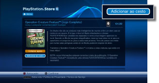
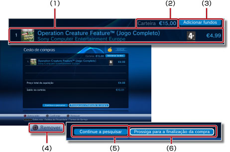
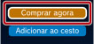
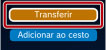

PlayStation®Network > Transferir (comprar) produtos
Transferir (comprar) produtos
Para utilizar esta função, poderá ter de actualizar o software de sistema.
Pode tranferir produtos (comprados ou gratuitos) como jogos, itens adicionais para jogos ou conteúdo de vídeo disponível na  (PlayStation®Store). Para transferir produtos (comprados ou gratuitos) de (PlayStation®Store), tem de criar primeiro uma conta na PlayStation®Network.
(PlayStation®Store). Para transferir produtos (comprados ou gratuitos) de (PlayStation®Store), tem de criar primeiro uma conta na PlayStation®Network.
1. |
Seleccione |
||||||||||||
|---|---|---|---|---|---|---|---|---|---|---|---|---|---|
2. |
Seleccione o item (pago ou grátis) que pretende transferir da |
||||||||||||
3. |
Seleccione [Adicionar ao cesto].  |
||||||||||||
4. |
Seleccione [Visualizar o cesto] para apresentar o ecrã seguinte. 
|
||||||||||||
5. |
Seleccione [Prossiga para a finalização da compra]. |
||||||||||||
6. |
Seleccione [Confirmar compra]. |
||||||||||||
7. |
Seleccione o item a transferir. |
Notas
- Os produtos disponíveis na (PlayStation®Store) variam consoante o país ou a região. Tenha em conta que apenas pode aceder à (PlayStation®Store) do país ou da região da sua conta PlayStation®Network.
- Para mais informações sobre os tipos de produtos (pagos ou grátis) que podem ser transferidos da (PlayStation®Store) e sobre os serviços pós-venda, visite o Web site da SCE da sua região.
- Se seleccionar [Comprar agora] para um item no passo 3, pode passar a página do cesto de compras e prosseguir directamente para o ecrã de confirmação da compra (passo 6). Se tiver as informações do cartão de crédito registadas na sua conta PlayStation®Network, os fundos são adicionados automaticamente quando a carteira não tem fundos suficientes para finalizar a compra.

- Quando seleccionar [Transferir] para um item gratuito (passo 3), passa a página do cesto de compras e prossegue directamente para o ecrã de transferências (passo 7).

- Se a ID de início de sessão (endereço de correio electrónico) não estiver correcta (ou o endereço de e-mail não for válido), a mensagem de confirmação não será recebida. Utilize um endereço de correio electrónico válido onde possa receber mensagens quando regista a sua ID de início de sessão. Para alterar a sua ID de início de sessão, vá a
 (PlayStation®Network) e seleccione
(PlayStation®Network) e seleccione  (Gestão de Contas) >
(Gestão de Contas) >  (Informações de conta) > [ID de início de sessão (endereço de correio electrónico)]. Siga as instruções no ecrã para fazer alterações.
(Informações de conta) > [ID de início de sessão (endereço de correio electrónico)]. Siga as instruções no ecrã para fazer alterações. - Alguns conteúdos transferidos (comprados) da (PlayStation®Store) só podem ser utilizados por dispositivos activados com o sistema PS3™, como por exemplo outro sistema PS3™ ou um sistema PSP™. Para activar ou desactivar um dispositivo, seleccione (Gestão de Contas) em (PlayStation®Network) e, em seguida, seleccione
 (Activação do sistema). Siga as instruções no ecrã para concluir a operação.
(Activação do sistema). Siga as instruções no ecrã para concluir a operação. - Quando for apresentado no ecrã durante uma transferência, pode executar outras operações durante a transferência. Seleccione para regressar ao ecrã anterior enquanto a transferência prossegue. Para mais informações, consulte
 (Rede) >
(Rede) >  (Gestão de Transferências) > [Transferência em Segundo Plano] neste guia.
(Gestão de Transferências) > [Transferência em Segundo Plano] neste guia. - Se aparecer no ecrã durante uma transferência, é possível reproduzir o vídeo durante a sua transferência. Se seleccionar , (PlayStation®Store) fecha e inicia a reprodução do vídeo.